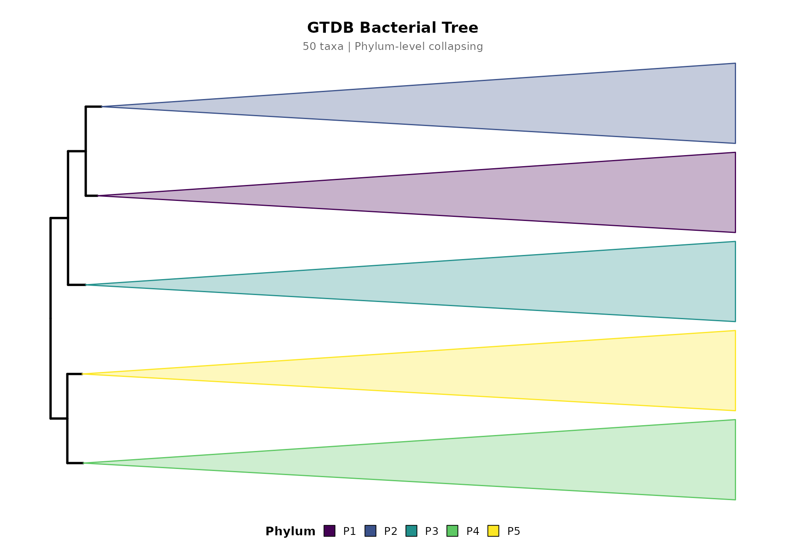

Installation
# Install from local source package
install.packages("path/to/Rclade_1.0.0.tar.gz", repos = NULL, type = "source")Basic Usage
The simplest way to create a timetree visualization using the built-in example data:
library(Rclade)
# Load built-in example tree (50 tips, GTDB-style labels)
data(example_tree)
# Plot with phylum-level collapsing (no timescale for speed)
p <- plot_timetree(example_tree, rank = "phylum",
taxonomy_format = "GTDB",
add_timescale = FALSE)
#>
#> ============================================================
#> Rclade: Phylogenetic Tree Visualization
#> ============================================================
#> 2026-08-22T16:18:50.210+00:00 | INFO | Starting plot_timetree pipeline
#> 2026-08-22T16:18:50.211+00:00 | INFO | Tree input : phylo object
#> 2026-08-22T16:18:50.212+00:00 | INFO | Rank : phylum
#> 2026-08-22T16:18:50.212+00:00 | INFO | Layout : rectangular
#> 2026-08-22T16:18:50.213+00:00 | INFO | Unit : auto
#> 2026-08-22T16:18:50.222+00:00 | INFO | Step 1/7: Input validation and reading
#>
#> --------------------------------------------------
#> >> Input Validation
#> --------------------------------------------------
#> 2026-08-22T16:18:50.224+00:00 | INFO | Tips : 50
#> 2026-08-22T16:18:50.225+00:00 | INFO | Internal nodes : 49
#> 2026-08-22T16:18:50.225+00:00 | INFO | Edge lengths range : 40.1579 to 2758.4006
#> 2026-08-22T16:18:50.226+00:00 | INFO | Input validation passed
#> 2026-08-22T16:18:50.226+00:00 | INFO | Timer 'input_reading': 3 ms
#> 2026-08-22T16:18:50.227+00:00 | INFO | Step 2/7: Taxonomy parsing
#> 2026-08-22T16:18:50.227+00:00 | INFO | Using rank-based taxonomy: phylum
#> 2026-08-22T16:18:50.236+00:00 | INFO | Detected format : GTDB
#> 2026-08-22T16:18:50.237+00:00 | INFO | Groups found : 5
#> 2026-08-22T16:18:50.237+00:00 | INFO | Timer 'taxonomy_parsing': 10 ms
#> 2026-08-22T16:18:50.238+00:00 | INFO | Step 3/7: MRCA computation and monophyly check
#> 2026-08-22T16:18:50.238+00:00 | INFO | Checking monophyly and computing MRCA for each group...
#> 2026-08-22T16:18:50.242+00:00 | INFO | Valid groups for collapse: 5 out of 5 total groups
#> 2026-08-22T16:18:50.243+00:00 | INFO | Valid MRCA nodes : 5
#> 2026-08-22T16:18:50.243+00:00 | INFO | Timer 'mrca_computation': 5 ms
#> 2026-08-22T16:18:51.150+00:00 | INFO | Step 4/7: Color generation
#> 2026-08-22T16:18:51.158+00:00 | INFO | Color palette : viridis
#> 2026-08-22T16:18:51.159+00:00 | INFO | Step 5/7: Tree rendering
#> ! # Invaild edge matrix for <phylo>. A <tbl_df> is returned.
#> ! # Invaild edge matrix for <phylo>. A <tbl_df> is returned.
#> 2026-08-22T16:18:51.391+00:00 | INFO | Collapsing 5 clades...
#> 2026-08-22T16:18:51.424+00:00 | INFO | Clade collapse complete
#> 2026-08-22T16:18:51.424+00:00 | INFO | Timer 'tree_rendering': 264 ms
#> 2026-08-22T16:18:51.425+00:00 | INFO | Step 6/7: Timescale integration
#>
#> ============================================================
#> Pipeline Complete
#> ============================================================
#> 2026-08-22T16:18:51.522+00:00 | INFO | Tips : 50
#> 2026-08-22T16:18:51.523+00:00 | INFO | Groups : 5
#> 2026-08-22T16:18:51.523+00:00 | INFO | Groups collapsed : 5
#> 2026-08-22T16:18:51.524+00:00 | INFO | Taxonomy format : GTDB
#> 2026-08-22T16:18:51.524+00:00 | INFO | Layout : rectangular
#> 2026-08-22T16:18:51.524+00:00 | INFO | Timescale : disabled
#> 2026-08-22T16:18:51.525+00:00 | INFO | plot_timetree completed successfully
print(p)
Adding Titles
Use main_title and sub_title to add
centered titles:
p <- plot_timetree(example_tree, rank = "phylum",
taxonomy_format = "GTDB",
add_timescale = FALSE,
main_title = "GTDB Bacterial Tree",
sub_title = "50 taxa | Phylum-level collapsing")
#>
#> ============================================================
#> Rclade: Phylogenetic Tree Visualization
#> ============================================================
#> 2026-08-22T16:18:52.068+00:00 | INFO | Starting plot_timetree pipeline
#> 2026-08-22T16:18:52.068+00:00 | INFO | Tree input : phylo object
#> 2026-08-22T16:18:52.068+00:00 | INFO | Rank : phylum
#> 2026-08-22T16:18:52.069+00:00 | INFO | Layout : rectangular
#> 2026-08-22T16:18:52.069+00:00 | INFO | Unit : auto
#> 2026-08-22T16:18:52.069+00:00 | INFO | Step 1/7: Input validation and reading
#>
#> --------------------------------------------------
#> >> Input Validation
#> --------------------------------------------------
#> 2026-08-22T16:18:52.070+00:00 | INFO | Tips : 50
#> 2026-08-22T16:18:52.071+00:00 | INFO | Internal nodes : 49
#> 2026-08-22T16:18:52.071+00:00 | INFO | Edge lengths range : 40.1579 to 2758.4006
#> 2026-08-22T16:18:52.072+00:00 | INFO | Input validation passed
#> 2026-08-22T16:18:52.073+00:00 | INFO | Timer 'input_reading': 3 ms
#> 2026-08-22T16:18:52.073+00:00 | INFO | Step 2/7: Taxonomy parsing
#> 2026-08-22T16:18:52.073+00:00 | INFO | Using rank-based taxonomy: phylum
#> 2026-08-22T16:18:52.081+00:00 | INFO | Detected format : GTDB
#> 2026-08-22T16:18:52.082+00:00 | INFO | Groups found : 5
#> 2026-08-22T16:18:52.082+00:00 | INFO | Timer 'taxonomy_parsing': 9 ms
#> 2026-08-22T16:18:52.082+00:00 | INFO | Step 3/7: MRCA computation and monophyly check
#> 2026-08-22T16:18:52.083+00:00 | INFO | Checking monophyly and computing MRCA for each group...
#> 2026-08-22T16:18:52.085+00:00 | INFO | Valid groups for collapse: 5 out of 5 total groups
#> 2026-08-22T16:18:52.085+00:00 | INFO | Valid MRCA nodes : 5
#> 2026-08-22T16:18:52.086+00:00 | INFO | Timer 'mrca_computation': 3 ms
#> 2026-08-22T16:18:52.086+00:00 | INFO | Step 4/7: Color generation
#> 2026-08-22T16:18:52.088+00:00 | INFO | Color palette : viridis
#> 2026-08-22T16:18:52.088+00:00 | INFO | Step 5/7: Tree rendering
#> ! # Invaild edge matrix for <phylo>. A <tbl_df> is returned.
#> ! # Invaild edge matrix for <phylo>. A <tbl_df> is returned.
#> 2026-08-22T16:18:52.207+00:00 | INFO | Collapsing 5 clades...
#> 2026-08-22T16:18:52.236+00:00 | INFO | Clade collapse complete
#> 2026-08-22T16:18:52.236+00:00 | INFO | Timer 'tree_rendering': 148 ms
#> 2026-08-22T16:18:52.237+00:00 | INFO | Step 6/7: Timescale integration
#>
#> ============================================================
#> Pipeline Complete
#> ============================================================
#> 2026-08-22T16:18:52.383+00:00 | INFO | Tips : 50
#> 2026-08-22T16:18:52.383+00:00 | INFO | Groups : 5
#> 2026-08-22T16:18:52.383+00:00 | INFO | Groups collapsed : 5
#> 2026-08-22T16:18:52.384+00:00 | INFO | Taxonomy format : GTDB
#> 2026-08-22T16:18:52.384+00:00 | INFO | Layout : rectangular
#> 2026-08-22T16:18:52.385+00:00 | INFO | Timescale : disabled
#> 2026-08-22T16:18:52.385+00:00 | INFO | plot_timetree completed successfully
print(p)
Summarizing Results
Use summarize_timetree() to inspect the collapse
metadata:
p <- plot_timetree(example_tree, rank = "phylum",
taxonomy_format = "GTDB",
add_timescale = FALSE)
#>
#> ============================================================
#> Rclade: Phylogenetic Tree Visualization
#> ============================================================
#> 2026-08-22T16:18:52.990+00:00 | INFO | Starting plot_timetree pipeline
#> 2026-08-22T16:18:52.991+00:00 | INFO | Tree input : phylo object
#> 2026-08-22T16:18:52.991+00:00 | INFO | Rank : phylum
#> 2026-08-22T16:18:52.991+00:00 | INFO | Layout : rectangular
#> 2026-08-22T16:18:52.992+00:00 | INFO | Unit : auto
#> 2026-08-22T16:18:52.992+00:00 | INFO | Step 1/7: Input validation and reading
#>
#> --------------------------------------------------
#> >> Input Validation
#> --------------------------------------------------
#> 2026-08-22T16:18:52.993+00:00 | INFO | Tips : 50
#> 2026-08-22T16:18:52.993+00:00 | INFO | Internal nodes : 49
#> 2026-08-22T16:18:52.994+00:00 | INFO | Edge lengths range : 40.1579 to 2758.4006
#> 2026-08-22T16:18:52.995+00:00 | INFO | Input validation passed
#> 2026-08-22T16:18:52.995+00:00 | INFO | Timer 'input_reading': 3 ms
#> 2026-08-22T16:18:52.995+00:00 | INFO | Step 2/7: Taxonomy parsing
#> 2026-08-22T16:18:52.996+00:00 | INFO | Using rank-based taxonomy: phylum
#> 2026-08-22T16:18:53.003+00:00 | INFO | Detected format : GTDB
#> 2026-08-22T16:18:53.004+00:00 | INFO | Groups found : 5
#> 2026-08-22T16:18:53.004+00:00 | INFO | Timer 'taxonomy_parsing': 8 ms
#> 2026-08-22T16:18:53.004+00:00 | INFO | Step 3/7: MRCA computation and monophyly check
#> 2026-08-22T16:18:53.005+00:00 | INFO | Checking monophyly and computing MRCA for each group...
#> 2026-08-22T16:18:53.007+00:00 | INFO | Valid groups for collapse: 5 out of 5 total groups
#> 2026-08-22T16:18:53.008+00:00 | INFO | Valid MRCA nodes : 5
#> 2026-08-22T16:18:53.008+00:00 | INFO | Timer 'mrca_computation': 3 ms
#> 2026-08-22T16:18:53.009+00:00 | INFO | Step 4/7: Color generation
#> 2026-08-22T16:18:53.010+00:00 | INFO | Color palette : viridis
#> 2026-08-22T16:18:53.011+00:00 | INFO | Step 5/7: Tree rendering
#> ! # Invaild edge matrix for <phylo>. A <tbl_df> is returned.
#> ! # Invaild edge matrix for <phylo>. A <tbl_df> is returned.
#> 2026-08-22T16:18:53.124+00:00 | INFO | Collapsing 5 clades...
#> 2026-08-22T16:18:53.152+00:00 | INFO | Clade collapse complete
#> 2026-08-22T16:18:53.153+00:00 | INFO | Timer 'tree_rendering': 142 ms
#> 2026-08-22T16:18:53.153+00:00 | INFO | Step 6/7: Timescale integration
#>
#> ============================================================
#> Pipeline Complete
#> ============================================================
#> 2026-08-22T16:18:53.242+00:00 | INFO | Tips : 50
#> 2026-08-22T16:18:53.242+00:00 | INFO | Groups : 5
#> 2026-08-22T16:18:53.242+00:00 | INFO | Groups collapsed : 5
#> 2026-08-22T16:18:53.243+00:00 | INFO | Taxonomy format : GTDB
#> 2026-08-22T16:18:53.243+00:00 | INFO | Layout : rectangular
#> 2026-08-22T16:18:53.243+00:00 | INFO | Timescale : disabled
#> 2026-08-22T16:18:53.244+00:00 | INFO | plot_timetree completed successfully
summarize_timetree(p)
#> === Rclade Timetree Summary ===
#> Input tips: 50
#> Collapsed groups: 5
#> Actual tips after collapse: 5
#> Taxonomy format: GTDB
#> Collapse rank: phylum
#> Palette: viridis
#> Layout: rectangular
#> Timescale: no
#>
#> Group details:
#> P1 n=10 node=54
#> P2 n=10 node=63
#> P3 n=10 node=72
#> P4 n=10 node=82
#> P5 n=10 node=91Saving Output
# Save to PDF
save_timetree(p, "output.pdf", width = 14, height = 10)
# One-line pipeline
plot_timetree(example_tree, rank = "phylum", output = "output.pdf")Taxonomy Quality Check
Before visualization, check how well your labels can be parsed:
summarize_taxonomy_quality(example_tree$tip.label, format = "GTDB")
#> === Taxonomy Label Parsing Quality Report ===
#> Total labels: 50
#> Detected format: GTDB
#>
#> Per-rank parse rates:
#> kingdom 0.0% (0/50)
#> domain 100.0% (50/50) ====================
#> phylum 100.0% (50/50) ====================
#> class 100.0% (50/50) ====================
#> order 0.0% (0/50)
#> family 0.0% (0/50)
#> genus 0.0% (0/50)
#> species 0.0% (0/50)
#> subspecies 0.0% (0/50)
#>
#> All labels parsed successfully.References & Acknowledgments
Rclade builds on the ggtree and deeptime R packages. If you use Rclade in published research, please cite Rclade along with these key dependencies:
- Yu G, Smith DK, Zhu H, Guan Y, Lam TT-Y (2017). “ggtree: an R package for visualization and annotation of phylogenetic trees with their covariates and other associated data.” Methods in Ecology and Evolution, 8(1), 28-36. doi:10.1111/2041-210X.12628
- Gearty W (2025). “deeptime: an R package that facilitates highly customizable and reproducible visualizations of data over geological time intervals.” Big Earth Data. doi:10.1080/20964471.2025.2537516
- Paradis E, Schliep K (2019). “ape 5.0: an environment for modern phylogenetics and evolutionary analyses in R.” Bioinformatics, 35(3), 526-528. doi:10.1093/bioinformatics/bty633